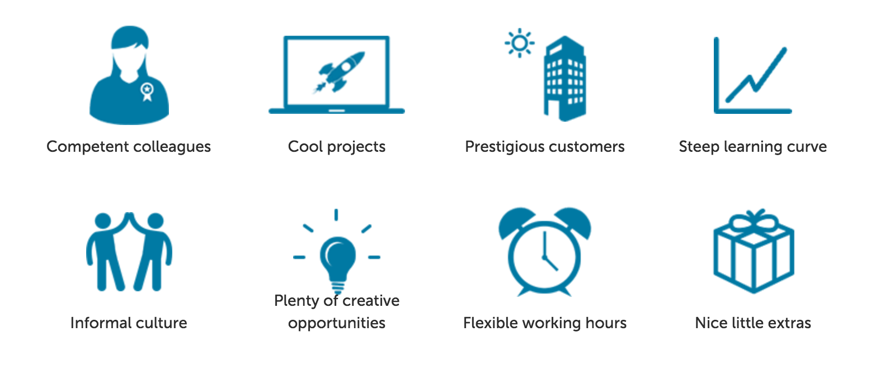

Felix Frank
CfgMgmtCamp.eu Gent 2017
Felix - trying to automate all the things since 2004
Speaking of...
...we are hiring in Berlin
Welcome!
IMAGES: mgmt, tux, puppet
Many cool things to talk about
So let's talk about game development
IMAGE? Game memesGames: stateful systems with really great UI
IMAGE: Mario? annotated with some numbers and vectorsGame design lessons for utility software
Larger game productions not unlike enterprise tools
e.g. European Air War
IMAGE: game coverIt was doomed
IMAGE: money, bugs, leaving developers
New staff faced dozens of bugs
Hence first task:
add the
Cool Cam
featureUltimately an early gimmick feature saved the project
An early gimmick feature:
$ mgmt run --allow-tmp-prefix \
--puppet 'package { "cowsay": ensure => installed }'
$ mgmt run --allow-tmp-prefix \
--puppet 'file { "/etc/ntp.conf":
content => template("/etc/ntp.conf.erb")
} ~>
service { "ntp": ensure => running }'
$ mgmt run --allow-tmp-prefix \
--puppet 'class { "puppetdb": database => "embedded" }'
$ mgmt run --allow-tmp-prefix \
--puppet /var/local/manifests/hardening.pp
$ mgmt run --allow-tmp-prefix --puppet agent
So how does this work?
let's take a quick deep dive
Two principal parts of Puppet
IMAGE: compiler vs. configurer"The Cool Cam" originally published at http://thedailywtf.com/articles/The-Cool-Cam